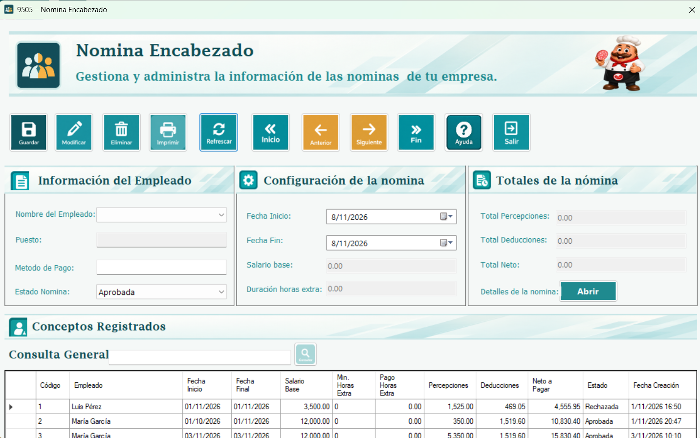
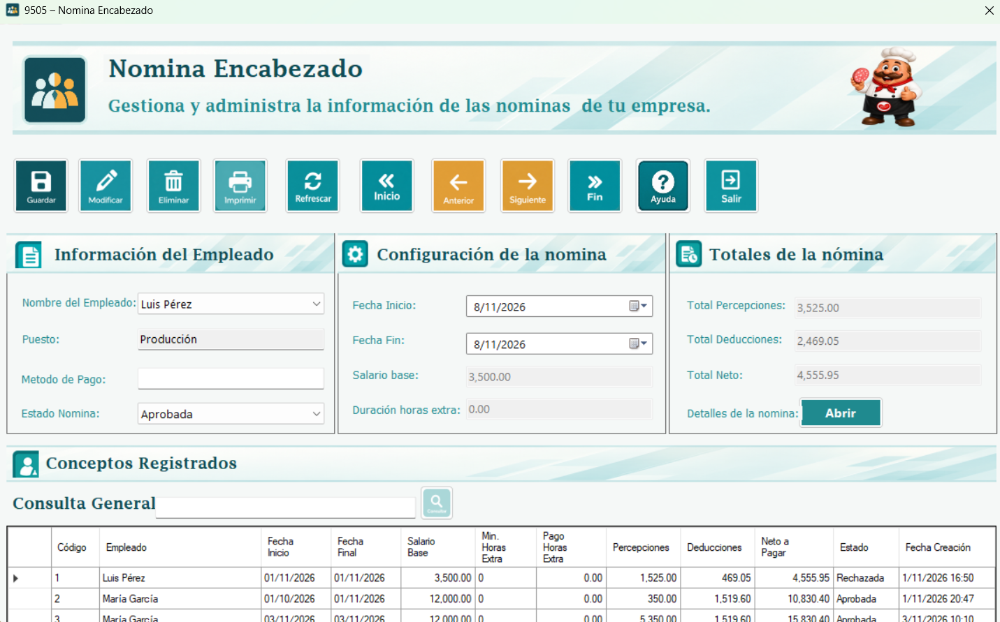
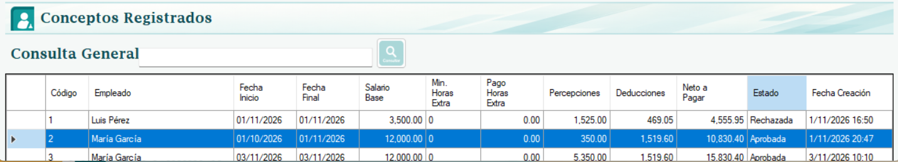

En este formulario se calcula y registra la nómina de un empleado para un período. El sistema obtiene su salario, identifica los conceptos que le corresponden, consulta sus comisiones aprobadas y reúne las horas extra pendientes que cumplen las condiciones. Con esos datos determina las percepciones, deducciones y el total neto a pagar.
También permite consultar nóminas ya guardadas, buscar por nombre del empleado, navegar entre registros y modificar su estado. Los importes se muestran en campos de solo lectura. Guardar registra una nómina nueva; Modificar cambia únicamente el estado de la nómina seleccionada.

El empleado debe estar activo y tener un salario registrado mayor que cero. Los conceptos y sus asignaciones o rangos deben estar configurados antes del cálculo. Las comisiones se consultan desde sus tablas de origen y las horas extra desde sus registros aprobados; esta ventana no permite crear comisiones ni autorizar horas extra.
Para un empleado no puede registrarse otra nómina no rechazada que comparta días con el período solicitado. Revise siempre las fechas: el cálculo de esta versión utiliza el salario registrado sin prorratearlo automáticamente por los días del período.
Nombre del Empleado: Seleccione una persona de la lista. Para registrar nóminas nuevas se cargan empleados activos.
Departamento: Se consulta a partir del empleado y se muestra en solo lectura.
Fecha Inicio y Fecha Fin: Definen el período. La fecha final no puede ser anterior a la inicial.
Estado Nómina: Opciones Aprobada, Rechazada y Pagada. Al guardar una nueva nómina se asigna Aprobada.
Salario base: Se obtiene del empleado. No se escribe ni se modifica manualmente en esta ventana.
Duración horas extra: Aunque la etiqueta dice duración, el cuadro muestra el importe total de horas extra. La duración en minutos aparece en la tabla inferior.
Puesto y Método de Pago: El diseño contiene estos campos, pero el código revisado no carga sus catálogos ni los usa al guardar el encabezado.
Al elegir un empleado o cambiar las fechas, la ventana prepara un cálculo nuevo y actualiza los importes. Si las fechas quedan invertidas, limpia los montos; al guardar se informa la validación. Si selecciona una nómina del listado, se muestran sus valores guardados, incluso si el empleado ya no está activo. Ver un registro histórico no vuelve a calcular sus importes.
Los conceptos activos de aplicación Todos se consideran para el empleado. Los de aplicación Algunos se incluyen cuando existe una asignación activa al empleado o a su departamento. Un concepto se clasifica como percepción o deducción según su efecto en el catálogo.
Si el tipo es Monto, se utiliza el valor configurado. Si es %, se aplica ese porcentaje al salario del empleado. Si es Tabla, se busca un rango activo que contenga el salario y se suma el importe fijo base al resultado de su modo de cálculo. En modo %, el porcentaje se aplica al salario completo. Si no hay un rango coincidente, ese concepto se omite.
Las comisiones se agregan como una percepción denominada Comisión por Ventas. Se suman detalles de comisiones aprobadas del empleado cuya fecha final de comisión se encuentra dentro del período de nómina. El concepto con ese nombre no se calcula nuevamente como un concepto ordinario.
Las horas extra deben estar aprobadas, activas, sin vínculo con otra nómina y asociadas a una asistencia cuya fecha esté dentro del período. Se acumulan su duración y el importe de pago registrado. Al guardar el encabezado se vinculan esas horas con la nómina para que no vuelvan a incluirse como pendientes.
El total neto se obtiene sumando salario base, percepciones y pago de horas extra, y restando deducciones. El sistema impide guardar si el resultado es negativo. Los conceptos se calculan con redondeo a cuatro decimales, aunque los cuadros de importes se muestran con dos.
Ejemplo ilustrativo: con salario de Q4,000, bonificación de Q250, comisión de Q300, horas extra de Q150 y deducciones de Q200, las percepciones son Q550 y el neto es Q4,500. El pago de horas extra se suma aparte del total de percepciones.
El campo período MENSUAL o ANUAL del catálogo no produce una división del valor anual entre doce en este cálculo. Tampoco se calcula un porcentaje sobre el excedente de un tramo. Estas explicaciones corresponden al código entregado y no deben interpretarse como una asesoría tributaria legal.

1. Use Refrescar para limpiar la selección y cargar empleados activos.
2. Seleccione el empleado y defina las fechas inicial y final.
3. Revise el salario, horas extra, percepciones, deducciones y neto.
4. Presione Guardar. El sistema verifica el período, busca traslapes y recalcula los montos antes de registrarlos.
5. Confirme el mensaje Grabación exitosa y localice la nueva nómina en el listado. El estado inicial será Aprobada.
Seleccione una fila, elija el nuevo Estado Nómina y presione Modificar. Esta operación conserva el empleado, las fechas y los importes guardados; los cambios de esos controles no se usan para actualizar el registro seleccionado. Para corregir un cálculo registrado, revise la posibilidad de rechazarlo y crear una nueva nómina.
Al seleccionar Rechazada se pide confirmación y se advierte que no podrá reactivarse. Al aceptar se liberan las horas extra aprobadas que estaban vinculadas. Una nómina rechazada permanece disponible en el historial y no impide registrar otra para ese período. El sistema no habilita su regreso a Aprobada ni a Pagada.
Pagada registra un estado en la base de datos; este botón no ejecuta una transferencia bancaria ni genera por sí mismo un comprobante de pago. La eliminación de nóminas está bloqueada en el controlador, aunque el diseño tenga un botón Eliminar.
La tabla inferior es de solo lectura. Muestra código, empleado, fechas, salario base, minutos de horas extra, pago de horas extra, percepciones, deducciones, neto, estado y fecha de creación. Seleccionar una fila carga sus datos arriba. Utilice la barra horizontal si no caben todas las columnas.
Consulta General filtra por coincidencias en el nombre del empleado. No es un filtro por fechas. Inicio, Anterior, Siguiente y Fin recorren las filas del listado visible; no cambian el período de una nómina almacenada.

Refrescar limpia la búsqueda, vuelve a cargar los empleados y las nóminas y reinicia los campos. Asignación de conceptos abre la ventana para relacionar conceptos con empleados o departamentos. Abrir, en el apartado de detalle, abre FrmNominaDetalle; allí debe seleccionar la nómina que desea consultar, porque no se transfiere automáticamente el identificador de la fila actual.
Imprimir abre el reporte de encabezados. En esta versión consulta todos los encabezados y no recibe el filtro por nombre del listado. Salir cierra el formulario.
Seleccione un empleado o empleado no activo: Seleccione una persona activa. Un registro histórico de un empleado inactivo puede consultarse, pero no usarse como nueva nómina.
Fechas invertidas: Cambie las fechas para que la final sea igual o posterior a la inicial.
Salario no registrado o inválido: Revise el salario en el mantenimiento del empleado.
Existe una nómina que se traslapa: Consulte el historial y corrija el período; las nóminas rechazadas se excluyen de esta comprobación.
Deducciones superiores a ingresos: Revise conceptos, asignaciones y rangos antes de intentar guardar nuevamente.
Nómina rechazada no puede reactivarse: Mantenga el registro histórico y genere una nueva nómina si corresponde.